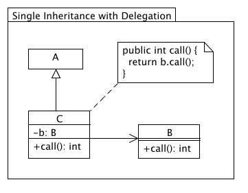
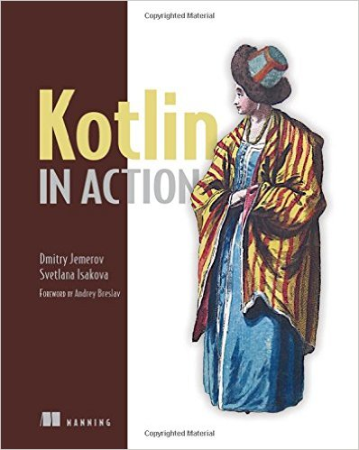

layout: true class: white-text name: cover background-image: url(images/kotlin-tower.jpg) background-size: cover --- layout: true class: divider name: divider background-color: #26546D --- layout: true class: divider name: sub-divider background-color: #70AD47 --- template: cover <div class="footer bottombox" style="background-color: #2C4B60;"> <h1>Introduction to <img src="images/kotlin.png" height="42"><br>For Java Developers</h1> <h3>Martin Fietz</h3> </div> <div class="footer bottombox"> <h1>Introduction to <img src="images/kotlin.png" height="42"><br>For Java Developers</h1> <h3>Martin Fietz</h3> </div> --- layout: true --- # First Taste¹ ``` data class Person( val name: String, val age: Int? = null ) fun main(args: Array<String>) { val people = listOf(Person("Alice"), Person("Bob", 42)) println("The oldest person is ${people.oldest()}}") } private fun List<Person>.oldest() = this.maxBy { it.age ?: 0 } ``` prints ```diff The oldest person is Person(name=Bob, age=42)} ``` <div class="footnote"> <hr> <span class="footnote">¹ Adapted from <i>Kotlin in Action</i></span> </div> --- count: false # First Taste¹ ``` data class Person( val name: String, val age: Int? = null ) fun main(args: Array<String>) { * val people = listOf(Person("Alice"), Person("Bob", age = 42)) println("The oldest person is ${people.oldest()}}") } private fun List<Person>.oldest() = this.maxBy { it.age ?: 0 } ``` prints ```diff The oldest person is Person(name=Bob, age=42)} ``` <div class="footnote"> <hr> <span class="footnote">¹ Adapted from <i>Kotlin in Action</i></span> </div> --- count: false # First Taste¹ ``` data class Person( val name: String, val age: Int? = null ) fun main(args: Array<String>) { val people = listOf(Person("Alice"), Person("Bob", age = 42)) * println("The oldest person is ${people.oldest()}") } private fun List<Person>.oldest() = this.maxBy { it.age ?: 0 } ``` prints ```diff The oldest person is Person(name=Bob, age=42) ``` <div class="footnote"> <hr> <span class="footnote">¹ Adapted from <i>Kotlin in Action</i></span> </div> --- template: divider # Overview --- # History | | | | -------- | ------------- | | Jul 2011: | Announcement | | | | | Feb 2016: | Release of Kotlin 1.0 | | | Spring Initializr supports Kotlin | | | | Jan 2017: | Introduction of Kotlin support in Spring Framework 5.0 | | | | | May 2017: | Google announces First-class support for Android | | | | | Jun 2017: | Kotlin reaches TIOBE top 50 | --- # Kotlin is ... - statically-typed programming language - runs on the Java Virtual Machine, Android and the browser (can be compiled to JavaScript source code) - designed to interoperate with Java code - tries to avoid boilerplate code as much as possible - based on Java 6 - Open Source: published under the Apache License, Version 2.0 - actively developed on GitHub: https://github.com/JetBrains/kotlin - loves contributions (read: accepts pull requests) --- # Key Features - Null Safety - Data Classes - Extension functions - Defaulted and named parameters - Full Java interoperability --- # Key Features (cont'd) - Immutability - Higher-order functions / lambda expressions - Class delegation - Delegated properties - Operator overloading - Type aliases - Coroutines --- template: divider # Environment Setup --- # Building with Maven ```xml <properties> <kotlin.version>1.1.3</kotlin.version> </properties> ``` ```xml <dependencies> <dependency> <groupId>org.jetbrains.kotlin</groupId> <artifactId>kotlin-stdlib</artifactId> <version>${kotlin.version}</version> </dependency> </dependencies> ``` ```xml <build> <sourceDirectory>src/main/kotlin</sourceDirectory> <testSourceDirectory>src/test/kotlin</testSourceDirectory> ... ``` --- # Building with Maven (cont'd) ```xml <plugins> <plugin> <groupId>org.jetbrains.kotlin</groupId> <artifactId>kotlin-maven-plugin</artifactId> <version>${kotlin.version}</version> <executions> <execution> <id>compile</id> <phase>compile</phase> <goals><goal>compile</goal></goals> </execution> <execution> <id>test-compile</id> <phase>test-compile</phase> <goals><goal>test-compile</goal></goals> </execution> </executions> </plugin> </plugins> </build> ``` *Source: https://kotlinlang.org/docs/reference/using-maven.html* --- # Building with Gradle ```xml buildscript { ext.kotlin_version = '1.1.3' repositories { mavenCentral() } dependencies { classpath "org.jetbrains.kotlin:kotlin-gradle-plugin:$kotlin_version" } } ``` ```groovy apply plugin: 'kotlin' ``` ```groovy repositories { mavenCentral() } dependencies { compile "org.jetbrains.kotlin:kotlin-stdlib" } ``` --- # Building with Gradle (cont'd) ** Targeting Java 8:** ```groovy dependencies { compile "org.jetbrains.kotlin:kotlin-stdlib-jre8:$kotlin_version" } compileKotlin { kotlinOptions.jvmTarget = "1.8" } compileTestKotlin { kotlinOptions.jvmTarget = "1.8" } ``` *Source: https://kotlinlang.org/docs/reference/using-gradle.html* --- # IntelliJ IDEA * Install Kotlin plugin:<br>Preferences → Plugins → Browse repositories... → "Kotlin" → Install * New Project → Java/Gradle/Maven → Kotlin → ... <br> <div style="text-align: center"> <img src="images/mission-accomplished.gif" height="150"><br> </div> --- # Command Line Compiler - Install - Download from https://github.com/JetBrains/kotlin/releases - macOS: `brew install kotlin` - Compile: ``` kotlinc hello.kt [-include-runtime] -d hello.jar ``` - REPL: ``` kotlinc-jvm ``` --- template: divider # Basics --- # Data Types - Everything is an object, no primitive types - Kotlin compiler will automatically mal basic types back to JVM primitives when possible - values must be boxed when type is nullable or when used in generic ``` val int: Int = 42 val long: Long = 42L val double: Double = 42.17 val float: Float = 42.17F var hexadecimal: Int = 0xFF var binary: Int = 0b010101 val isTrue: Boolean = 42 > 17 val character: Char = 'c' val string: String = "this is a sentence" val rawString: String = """{ "key": "value" }""" val array: Array<Int> = arrayOf(17, 42) ``` --- count: false # Data Types - Everything is an object, no primitive types - Kotlin compiler will automatically mal basic types back to JVM primitives when possible - values must be boxed when type is nullable or when used in generic ``` val int: `Int` = 42 val long: `Long` = 42L val double: `Double` = 42.17 val float: `Float` = 42.17F var hexadecimal: `Int` = 0xFF var binary: `Int` = 0b010101 val isTrue: `Boolean` = 42 > 17 val character: `Char` = 'c' val string: `String` = "this is a sentence" val rawString: `String` = """{ "key": "value" }""" val array: `Array<Int>` = arrayOf(17, 42) ``` <img src="images/you-dont-say.png" height="100"> --- count: false # Basic Types - Everything is an object, no primitive types - Kotlin compiler will automatically mal basic types back to JVM primitives when possible - values must be boxed when type is nullable or when used in generic ``` val int = 42 val long = 42L val double = 42.17 val float = 42.17F var hexadecimal = 0xFF var binary = 0b010101 val isTrue = 42 > 17 val character = 'c' val string = "this is a sentence" val rawString = """{ "key": "value" }""" val array = arrayOf(17, 42) ``` <img src="images/mind-blown.gif" height="100" style="vertical-align:middle"> **Type inference!** --- # Properties and Fields Classes in Kotlin cannot have fields, they have properties. ``` val me = Person("Martin", 31) me.name // getter me.age = 32 // setter ``` <br> **Getters and Setters**<br> ``` var <propertyName>[: <PropertyType>] [= <property_initializer>] [<getter>] [<setter>] ``` ``` val <propertyName>[: <PropertyType>] [= <property_initializer>] [<getter>] ``` --- # Properties and Fields (cont'd) **Backing Fields** Kotlin provides an automatic backing field which can be accessed using the `field` identifier ``` var counter = 0 get() = field set(value) { if (value >= 0) `field` = value } ``` no backing field: ``` val isEmpty: Boolean get() = this.size == 0 ``` --- template: divider # Null Safety --- class: center, middle <img src="images/simply-explained-npe.jpg" height="420"> *Source: geek-and-poke.com* --- # Nullable Types and Non-Null Types Kotlin distinguishes between nullable references ``` var nullableName: String? = "Kotlin" nullableName.length // compilation error nullableName = null ``` and non-null references: ``` var nullSafeName: String = "Kotlin" nullSafeName.length // guaranteed to not cause an NPE nullSafeName = null // compilation error ``` --- # Safe Calls **Safe Call Operator** ``` val length = name?.length ``` is equivalent to ``` val length: Int? = if (name != null) name.length else null ``` **Execute if not null** ``` name?.let { ... // execute this block if not null } ``` --- # Safe Calls (cont'd) **Safe calls chain** ``` val length: Int`?` = company?.department?.team?.name?.length ``` Validates to null if any element of the chain is not null. In Java: ```java Integer length = null; if (company != null) { if (company.department != null) { if (company.department.team != null) { length = company.department.team.name.length(); } } } ``` --- # Smart Casts **Java** ```java if (maybeString instance String) { String str = (String) maybeString; System.out.println(str) } ``` **Kotlin** ``` if (maybeString is String) { println(maybeString.length) } ``` The Kotlin compiler can infer that once inside the if block the maybe string is indeed a string and performs the cast for us --- # Operators **Elvis Operator** ``` val length = if (name != null) name.length else -1 ``` can be shortened to: ``` val length: `Int` = name?.length ?: -1; ``` <br> **!! Operator** ("non-null asserted") ``` val length = name!!.length ``` `name!!` validates to non-null value of `name` if `name` is non-null and throws an NPE otherwise --- template: divider # Data Classes --- # Data Classes ``` `data` class Person( val name: String, var age: Int? = null ) ``` The Kotlin compiler automatically generates universal methods from all properties declared in the primary constructor: - `equals()` - `hashCode()` - `toString()` - `componentN` functions (enables usage in *destructuring declarations*) - `copy()` --- template: divider # Extension Functions --- # The Java Way ```java public class StringUtils { public static boolean isPalindrom(String s) { return s.length() > 0 && s.equals(new StringBuilder(s).reverse().toString()); } } ``` ```java StringUtils.isPalindrom("anna") ``` --- # Kotlin to the Rescue ``` fun String.isPalindrom() = this.isNotEmpty() && this == this.reversed() ``` *`isNotEmpty` and `reversed()` are extension functions provided by the Kotlin Standard Library.* Usage: ``` "otto".isPalindrom() ``` --- count: false # Kotlin to the Rescue ``` fun String.isPalindrom() = this.isNotEmpty() && this == this.reversed() ``` *`isNotEmpty` and `reversed()` are extension functions provided by the Kotlin Standard Library.* Usage: ``` "otto".isPalindrom() ``` <div style="text-align: center"> <img src="images/feels-good-man.png" height="240"><br> <i>Feels Good</i> </div> --- template: divider # Functions --- # Default Arguments ``` fun hallo(name: String = "World"): String { return "Hallo ${name}" } ``` ``` >>> hallo("Kotlin") Hallo kotlin >>> hallo() Hallo World ``` --- # Named Arguments ``` data class Person( val name: String, val age: Int ) ``` ``` >>> Person("Kotlin", 6) Person(name=Kotlin, age=6) >>> Person(name = "Kotlin", age = 6) Person(name=Kotlin, age=6) >>> Person("Kotlin", age = 6) Person(name=Kotlin, age=6) >>> Person(age=6, name="Kotlin") Person(name=Kotlin, age=1) ``` --- # Single-Expression functions ``` fun hallo(name: String = "World"): String { return "Hallo ${name}" } ``` When a function returns a single expression, the curly braces can be omitted: ``` fun hallo(name: String = "World"): String `=` "Hallo ${name}" ``` Explicitly declaring the return type is optional when it can be inferred by the compiler: ``` fun hallo(name: String = "World") = "Hallo ${name}" ``` --- template: divider # Java Interoperability --- # Calling Java code from Kotlin > Pretty much all Java code can be used without any issues <br> **Null-Safety and Platform Types** ``` val list = ArrayList<String>() val value: `???` = list[0] ``` --- count: false # Calling Java code from Kotlin > Pretty much all Java code can be used without any issues <br> **Null-Safety and Platform Types** ``` val list = ArrayList<String>() val value: `String` = list[0] ``` --- count: false # Calling Java code from Kotlin > Pretty much all Java code can be used without any issues <br> **Null-Safety and Platform Types** ``` val list = ArrayList<String>() val value: `String?` = list[0] ``` <div style="text-align: center"> <img src="images/confused.png" height="150"><br> </div> --- count: false # Calling Java code from Kotlin > Pretty much all Java code can be used without any issues <br> **Null-Safety and Platform Types** ``` val list = ArrayList<String>() val nullable: `String?` = list[0] // allowed, safe val notNull: `String` = list[0] // allowed, may throw an exception ``` - any reference in Java may be `null` - strict null-safety impractical for calling Java <br> *Platform Types* - Null-checks are relaxed - Kotlin does not issue nullability errors at compile time, but calls may fail at runtime --- # Calling Kotlin code from Java **Static Methods** ``` class Foo { companion object { `@JvmStatic` fun bar() {} } } ``` Kotlin can only generate static methods for functions defined in named objects or companion objects. ```java Foo.bar() ``` **Overloads Generation** ``` data class Person `@JvmOverloads constructor`(val name: String, var age: Int? = null) ``` ```java new Person("Martin"); new Person("Martin", 31); ``` --- # Calling Kotlin code from Java (cont'd) **Extension Functions** Extension functions are compiled to static functions. An extension function declared in a Kotlin source file `StringExtensions.kt` is accessible as a static method in the Java class `StringExtensionsKt`: ```java StringExtensionsKt.isPalindrom("otto"); ``` --- # Differences to Java - All exceptions are unchecked - constructor is treated the same as a normal function, no new keyword - `==` translate to `equals` and is null safe - ``` assertTrue(Person("Martin") == Person("Martin")) // structural equality ``` - `if ... else` and `try ... catch` are expressions - their result can be assigned to a value ``` val maybe = if (Math.random() < 0.5) "Yay!" else "Nay!" ``` - Classes are final by default --- template: divider # Collections --- # Immutable collections Kotlin distinguishes between **mutable** and **immutable collections** ``` >>> val immutableList = listOf(1, 2, 3) >>> immutableList.add(4) error: unresolved reference: add immutableList.add(4) ^ ``` ``` >>> val mutableList = mutableListOf(1, 2, 3) >>> mutableList.add(4) true ``` Mutable collections can have read only views: ``` >>> val readOnlyView: List<Int> = mutableListOf(1, 2, 3) >>> readOnlyView.add(4) error: unresolved reference: add readOnlyView.add(4) ^ >>> (readOnlyView as ArrayList<Int>).add(4) true ``` --- # Accessing maps ``` >>> val map = mapOf("foo" to 1, "bar" to 2) >>> map.get("foo") 1 >>> map["foo"] 1 ``` --- template: divider # Higher Order Functions --- # Higher Order Functions a function that takes functions as parameters, or returns a function ``` fun apply(operation: (Int, Int) -> Int, first: Int, second: Int): Int { return operation(first, second) } fun mult(): (Int, Int) -> Int = { x, y -> x + y } ``` ``` >>> apply({ x, y -> x + y }, 2, 3) 5 >>> apply(mult(), 2, 3) 6 ``` --- # Single Parameter: it ``` >>> val list = listOf(1,2,3) >>> list.map { i -> i * 2 } [2, 4, 6] ``` If a lambda only has one parameter, its declaration along with `->` can be omitted: ``` >>> list.map { `it` * 2 } [2, 4, 6] ``` --- # Kotlin for DLSs Parentheses in a call can be omitted entirely if the lambda is the only argument to that call. ``` >>> val people = listOf(Person("Alice", 17), Person("Bob", 42)) >>> people.maxBy({ it.age ?: 0 }) Person(name=Bob, age=42) >>> people.maxBy { it.age ?: 0 } Person(name=Bob, age=42) ``` Example from Anko Layouts¹: ``` verticalLayout { val name = editText() button("Say Hello") { onClick { toast("Hello, ${name.text}!") } } } ``` <div class="footnote"> <hr> <span class="footnote">¹ https://github.com/Kotlin/anko/wiki/Anko-Layouts</i></span> </div> --- template: divider # Delegation --- # BiMap > A `BiMap<K, V>` is a `Map<K, V>` that > > * allows you to view the "inverse" BiMap<V, K> with inverse() > * ensures that values are unique, making values() a Set <br> *Source: https://github.com/google/guava/wiki/NewCollectionTypesExplained#bimap* --- # BiMap in Java ```java public class SimpleBiMap<K,V> extends HashMap<K,V> implements BiMap<K,V> { public SimpleBiMap() { super(); } public SimpleBiMap(Map<K, V> collect) { super(collect); } @Override public V put(K key, V value) { if(keySet().contains(key)) { throw new IllegalArgumentException("Keys must be unique"); } if(values().contains(value)) { throw new IllegalArgumentException("Values must be unique"); } return super.put(key, value); } @Override public Map<V, K> inverse() { Map<V, K> inversed = entrySet().stream().collect(toMap(Entry::getValue, Entry::getKey)); return new SimpleBiMap<>(inversed); } } ``` --- # Class Delegation Effective java Item 16:<br> Favour composition over inheritance Composition over inheritance <div style="text-align: center"> <br> <i>Source: http://best-practice-software-engineering.ifs.tuwien.ac.at</i> </div> --- # BiMap in Java - with Delegation ```java public class SimpleBiMap<K,V> implements BiMap<K,V> { private final HashMap<K, V> map = new HashMap(); [...] public int size() { return map.size(); } public boolean isEmpty() { return map.isEmpty(); } public boolean containsValue(Object value) { return map.containsValue(value); } public boolean containsKey(Object key) { return map.containsKey(key); } public V get(Object key) { return map.get(key); } public V put(K key, V value) { return map.put(key, value); } public V remove(Object key) { return map.remove(key); } public void putAll(Map<? extends K, ? extends V> m) { map.putAll(m);} [...] } ``` --- # Class Delegation in Kotlin ``` interface BiMap<K, V> : MutableMap<K, V> { fun inverse(): Map<V, K> } ``` ``` class SimpleBiMapKt<K,V>(val map: HashMap<K,V> = HashMap()) : BiMap<K,V>, MutableMap<K,V> by map { override fun put(key: K, value: V): V? { if(map.containsKey(key)) { throw IllegalArgumentException("Keys must be unique") } if(map.containsValue(value)) { throw IllegalArgumentException("Values must be unique") } return map.put(key, value) } override fun inverse(): Map<V, K> { return map.entries.map { (k,v) -> Pair(v,k) }.toMap() } } ``` --- count: false # Delegated Properties Syntax: ``` val/var <property name>: <Type> by <expression> ``` e.g. ``` class Example { val str: String by Delegate() } ``` Standard delegates: - lazy property: value is only computed upon first access - observable property: listeners get notified about changes to this property - vetoable property: intercept assignment and block modification - storing properties in a map, instead of a separate field for each property ... or write your own *custom* property delegate! --- # Delegated Properties Syntax: ``` val/var <property name>: <Type> by <expression> ``` e.g. ``` class Example { val str: String by Delegate() } ``` Standard delegates: - <span style="background: #F9F8A5">lazy property: value is only computed upon first access</span> - observable property: listeners get notified about changes to this property - vetoable property: intercept assignment and block modification - storing properties in a map, instead of a separate field for each property ... or write your own *custom* property delegate! --- # Lazy property Heavy objects may affect application startup time and actually never be called. ``` class StringCache { val cachedString by lazy { expensiveComputation() } private fun expensiveComputation(): String { ... } } ``` The evaluation of lazy properties is *synchronized* by default. --- template: divider # Misc --- # Influenced by Effective Java?¹ | | | | | -- | -- | -- | | Item 2: | Builders | → default and named parameters | | | | | Item 3: | Creation of singletons | → object declaration | | | | | Item 14: | Use accessor methods, | → properties with auto-generated default | | not public fields | setters and getters | | | | | Item 15: | Minimize mutability | → data classes, immutable collections | | | | Item 17: | Design and document for | → final classes by default | | | inheritance or else prohibit it <div class="footnote"> <hr> <span class="footnote">¹ Sources: <a href="https://hackernoon.com/how-effective-java-may-have-influenced-the-design-of-kotlin-part-1-45fd64c2f974">https://hackernoon.com/</a> & <a href="https://medium.com/@lukleDev/how-effective-java-may-have-influenced-the-design-of-kotlin-part-2-89844d62ddf3">https://medium.com/@lukleDev/</a></span> </div> --- # Influenced by Effective Java?¹ (cont'd) | | | | | -- | -- | -- | | Item 23: | Don’t use raw types in new code | → no raw types | | | | | Item 28: | Use bounded wild cards to increase | → easier way of defining variance | | API flexibility | | | | | | | Item 36: | Consistently use `@Override` | → `override` as mandatory keyword | | | | | Item 43: | Return empty arrays or collections, | → null safety | | | not nulls | | | | | | | Item 59: | Avoid unnecessary use | → no checked exceptions | | | of checked exceptions | | | | | | <div class="footnote"> <hr> <span class="footnote">¹ Sources: <a href="https://hackernoon.com/how-effective-java-may-have-influenced-the-design-of-kotlin-part-1-45fd64c2f974">https://hackernoon.com/</a> & <a href="https://medium.com/@lukleDev/how-effective-java-may-have-influenced-the-design-of-kotlin-part-2-89844d62ddf3">https://medium.com/@lukleDev/</a></span> </div> --- # Things I skipped - Operator overloading - Packages - `when` expression - Nested Classes - Enum Classes - Ranges - Reflection - Annotations --- # Learning Resources - Kotlin Reference: https://kotlinlang.org/docs/reference/ - Kotlin Koans: https://try.kotlinlang.org/ - <br>*Kotlin in Action* by Dmitry Jemerov and Svetlana Isakova - Java Top Blogs: https://www.topjavablogs.com/ - Exercism: http://exercism.io/languages/kotlin/exercises - Handy Resources to Learn Kotlin Easily: http://blog.rahulchowdhury.co/handy-resources-to-learn-kotlin-easily/ --- # Conclusion <div style="text-align: center"> <img src="images/which-is-nice.jpg" height="380"> </div> --- template: divider # Thank you! ### Questions? <!-- CONTEND END -->